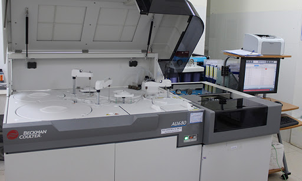
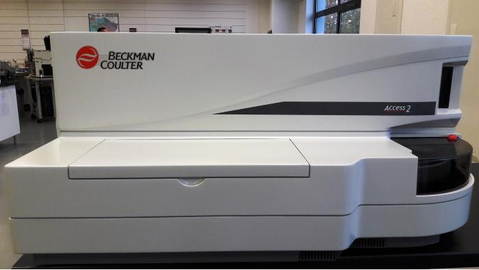
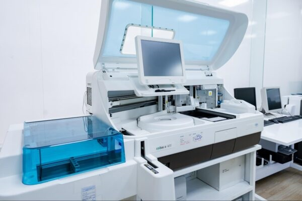
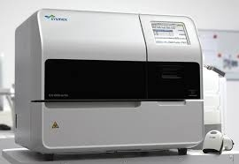
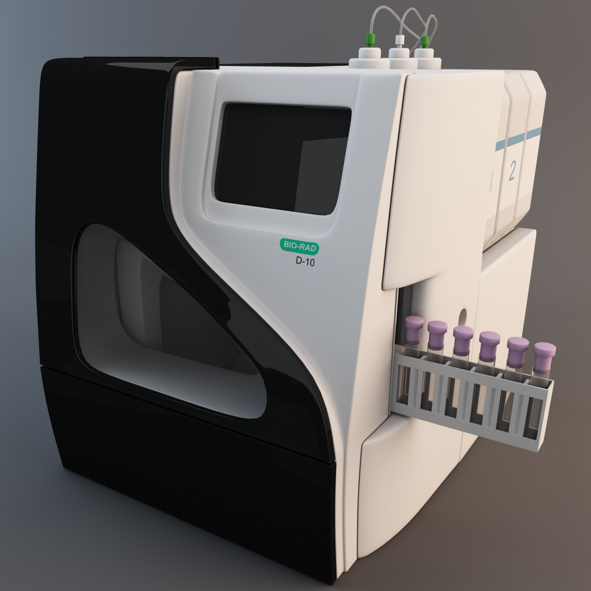
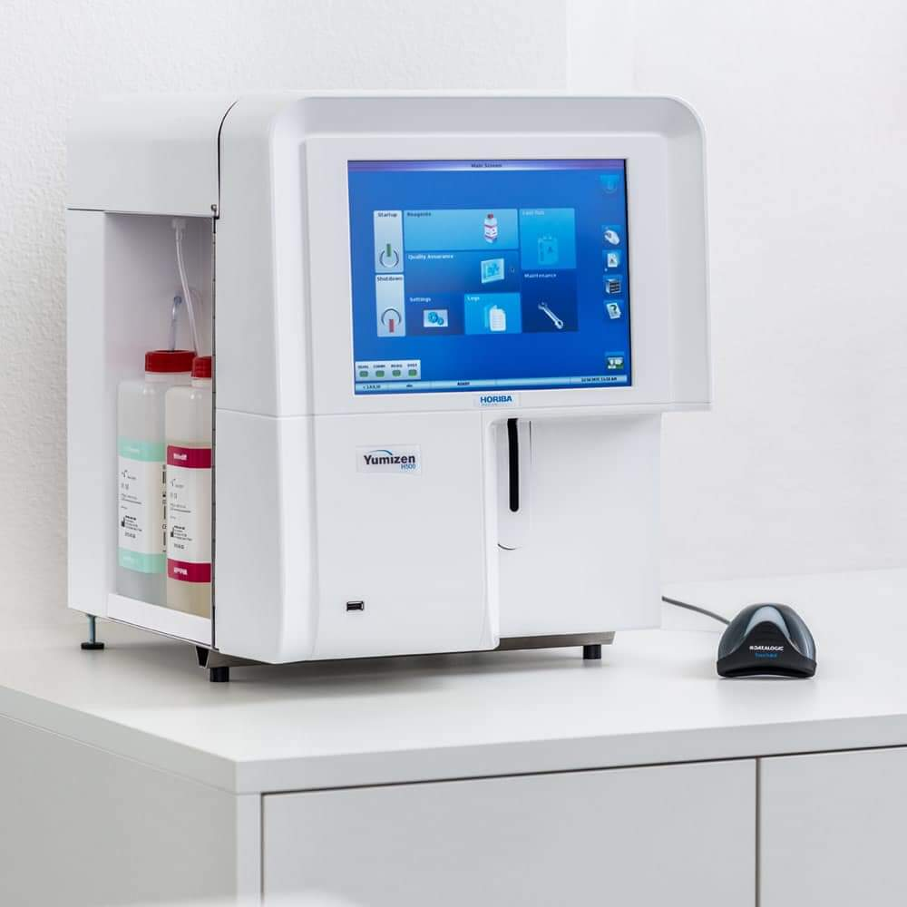

Tổng quan
Phòng Khám Đa khoa Trí Việt (được đổi tên từ “Phòng khám Đa Khoa Tân Mỹ” vào tháng 01/2022).
Với dịch vụ khám, chữa bệnh chất lượng cao và tinh thần phục vụ chu đáo, Phòng Khám Đa khoa Trí Việt đã trở thành địa chỉ khám, chữa bệnh tin cậy cho hầu hết người dân TP.HCM và các khu vực lân cận.
- Đội ngũ y bác sĩ giỏi và giàu kinh nghiệm thăm khám.
- Thủ tục khám chữa bệnh nhanh gọn và đơn giản.
- Các phương pháp và trang thiết bị y tế hiện đại được nhập về từ nước ngoài.
- Dịch vụ và chi phí luôn công khai và minh bạch.
Chọn Phòng Khám Đa khoa Trí Việt là bạn đã an tâm khi tại đây có rất nhiều chuyên khoa điều trị như: Nội khoa, ngoại khoa, sản phụ khoa, nhi khoa, tai mũi họng, răng hàm mặt, siêu âm màu 4 chiều, nội soi, xét nghiệm, x quang,…. Tại những chuyên khoa này đều có đội ngũ y bác sĩ giỏi về mặt chuyên môn và dày dặn kinh nghiệm trong khám và điều trị bệnh.
Đội ngũ thạc sĩ, bác sĩ, điều dưỡng giỏi chuyên môn và được hỗ trợ bởi nhiều trang thiết bị hiện đại, hệ thống xét nghiệm hiện đại… giúp Phòng khám đạt nhiều thành công trong ứng dụng kỹ thuật y khoa tiên tiến vào chẩn đoán và điều trị.
Sơ đồ tổ chức phòng khám trí việt
Giám đốc Phòng khám
Dr.Trần Hoàng Giang
Hơn 10 năm kinh nghiệm khám và chữa bệnhGiám đốc điều hành
Mr.Nguyễn Minh Trí
Giám đốc chuyên môn
Dr.Nguyễn Văn Nâu
Hơn 10 năm kinh nghiệm khám và chữa bệnhTrưởng phòng xét nghiệm
Mr.Nguyễn Phong Vũ
Hơn 10 năm kinh nghiệm khám và chữa bệnhSơ lược về phòng xét nghiệm
Đội ngũ chuyên viên, kỹ thuật viên có nhiều kinh nghiệm cùng hệ thống trang thiết bị xét nghiệm hiện đại đảm bảo các các kết quả xét nghiệm luôn nhanh chóng và chính xác. Hồ sơ quản lý kết quả Xét nghiệm chặt chẽ, bảo mật thông tin khách hàng.
Tại Phòng Khám Đa khoa Trí Việt, Phòng Xét nghiệm chúng tôi có điều khiện thuận lợi để phục vụ tất cả các bệnh nhân. Phòng Xét nghiệm sở hữu những máy móc tự động, tối tân nhất,chất lượng nhất và là máy móc của chính hãng. Bên cạnh đó, chúng tôi có một đội ngũ các bác sĩ và kỹ thuật viên tận tụy, chuyên nghiệp cung cấp những kết quả xét nghiệm chính xác, đáng tin cậy và trong thời gian ngắn nhất.
Tất cả các xét nghiệm, các hoạt động xét nghiệm đều tuân thủ nghiêm ngặt bằng quy trình nội kiểm, ngoại kiểm tra chất lượng, chuẩn chất lượng máy móc trang thiết bị theo tiêu chuẩn Quốc Tế.
- Xét nghiệm huyết học (haematology tests)
- Xét nghiệm sinh hóa (biochemistry tests): Tất cả các chỉ số sinh hóa trong máu
- Dấu ấn ung thư (tumor marker)
- Miễn dịch (immunology): các xét nghiệm miễn dịch về hormon (hormone tests), chất chỉ dấu ung thư.
- Nước tiểu và thuốc trong nước tiểu (urine drugs)
- Sinh học phân tử (molecular biology)
- Vi sinh (microbiology): các marker viêm gan siêu vi B, C…
Sinh hóa - miễn dịch
-

MÁY XÉT NGHIỆM SINH HÓA AU680
Nguồn gốc: Beckman Coulter- Mỹ -

Máy Xét Nghiệm Miễn Dịch Access 2
Nguồn gốc: Beckman Coulter - Mỹ -

Máy Xét Nghiệm Miễn Dịch Cobas E411
Nguồn gốc: Roche - Nhật Bản
Xét nghiệm sinh hóa máu là một xét nghiệm y học phổ biến, thường dùng trong chẩn đoán và theo dõi bệnh lý. Xét nghiệm sẽ đo nồng độ một số chất trong máu, từ đó đánh giá chức năng của một số bộ phận cơ thể đặc trưng cho chỉ số sinh hóa đó.
Xét nghiệm sinh hóa máu đơn giản, chi phí phù hợp nhưng có ý nghĩa quan trọng trong phát hiện sớm bệnh lý, điều trị và theo dõi điều trị bệnh. Các chỉ số xét nghiệm sinh hóa máu cơ bản bao gồm:
- Ure máu.
- Creatinin huyết thanh.
- AST (SGOT), ALT (SGPT), GGT.
- ALP.
- Bilirubin.
- Albumin.
- Đường huyết (Glucose).
- Mỡ máu.
- Xét nghiệm ion đồ.
- Xét nghiệm acid Uric
Xét nghiệm miễn dịch là một phương pháp phân tích sinh học có tính chọn lọc cao, đo lường sự hiện hiện hoặc hàm lượng một chất cần phân tích từ các phân tử nhỏ đến các đại phân tử, thông qua việc sử dụng một kháng thể (thông thường) hoặc một kháng nguyên (đôi khi).
Các xét nghiệm miễn dịch được thực hiện bằng cách sử dụng các kháng thể nhân tạo phù hợp với các chất hoặc mầm bệnh nào đó. Khi các chìa khóa kháng thể này tiếp xúc với các mẫu máu, nước tiểu hoặc phân, chúng liên kết với ổ khóa kháng thể trong đó và tạo nên phản ứng.
- Xét nghiệm dị ứng.
- Sàng lọc ung thư tiêu hóa.
- Thử thai.
- Xét nghiệm nước tiểu.
- Xét nghiệm nhận diện tác nhân nhiễm khuẩn.
- Xét nghiệm kiểm tra chất kích thích.
- Xét nghiệm nhồi máu cơ tim.
Hyết học - đông máu
-

Máy xét nghiệm đông máu tự động Sysmex CA-600 series
Nguồn gốc: Sysmex Corporation - Nhật -

Máy xét nghiệm Hemoglobin HbA1c Biorad D - 10
Nguồn gốc: BioRad - Mỹ -

Máy phân tích huyết học Yumizen H500
Nguồn gốc: HORIBA ABX SAS